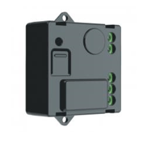

Legrand¶
Prise 220V¶

Fonctions¶
- Fonctionne:
Inclusion automatique dans Abeille.
- Commandes:
On
Off
Toggle
Lecture etat On/Off
Retour état automatique On/Off (Bind On/Off, Report On/Off)
Groupe
Scene (Devrait être ok d apres retour utilisateur)
Puissance (Bind, Report)
Routeur (elle diffuse les Link Status)
- Pas supporté:
Level (C’est normal la prise contient un relai)
- En cours d investigation:
Peut on avoir la conso ?
Note
Dixit Akila: NB: J’ai remarqué que sur certaines prises, la mesure de la consommation d’énergie n’existe pas. En effet, il faudra la centrale (à l’aide de l’OTA) pour que la prise se mette à jour et libère la fonctionnalité. Du coup, c’est le gros inconvénient, si vous n’avez que la ZiGate. Vous risquerez en achetant les produits Legrand Celiane Netatmo de ne pas avoir toutes les fonctionnalités …
Premiere mise sous tension¶
(En cours d’écriture, Pas encore très clair)
Premiere mise sous tension avec la zigate en inclusion. La prise allume la Led en rouge et on entend claquer le relai mais pas de message radio zigbee. Un appui long de 8s sur le reset derriere l anneau fait flasher une fois la led puis quand je relance le reset la led cligonte 1 fois et le relai claque mais rien ni en ch11, ni en ch15.
inclusion¶
(En cours d’écriture, Pas encore très clair)
Le bouton « reset » se trouve en façade en enlevant tous les caches et le bouton. Ensuite, il faut mettre la ZiGate en mode inclusion puis effectuer un appuie long 5-10 sec sur le reset … attendre 10 sec … puis faire un simple clic sur le reset. Si deja associé, faire un reset bouton proche roue crantée sur le Bouton au fond du trou. Avec un trombone appuyer environ 8 secondes. Une led s’allume vert, puis flash bleu, puis flash rouge, 1s apres faire un appui rapide sur le reset (Si ce n’est pas fait le module s’appaire puis passe en Beacon request Loop, très surprenant) et la le module fait un appairage. Et doit apparaitre dans Abeille. (Tests fait sur Channel 11, je ne sais pas si il y a des limitations sur ce point.)
Aussi une bonne description ici: https://github.com/pipiche38/Domoticz-Zigate-Wiki/blob/master/en-eng/Legrand-corner.md#pairing-process
Module Encastré¶
Spécifications¶
Module On/Off 1.3A max 100-240V 50Hz/60Hz 0.4A max Bouton On/Off Ref: 0 648 88 300W max Interrupteur poussoir distant Controle Charge Resistive (Necessite un neutre)
Inclusion¶
A la sortie de la boite, sur alimentation électrique le module envoie des Beacons et la Led Rouge est allumée.
Si je mets la ZiGate en inclusion et branche le module, il s’appaire au réseau zigbee, LED rouge s’éteind.
Si deja associé, faire un reset bouton proche roue crantée sur le Bouton au fond du trou. Avec un trombone appuyer environ 8 secondes. Une led s’allume vert, puis flash bleu, puis flash rouge, 1s apres faire un appui rapide sur le reset (Si ce n’est pas fait le module s’appaire puis passe en Beacon request Loop, très surprenant) et la le module fait un appairage. Et doit apparaitre dans Abeille. (Tests fait sur Channel 11, je ne sais pas si il y a des limitations sur ce point.)
Aussi une bonne description ici: https://github.com/pipiche38/Domoticz-Zigate-Wiki/blob/master/en-eng/Legrand-corner.md#pairing-process
Fonctions¶
- Fonctionne:
On
Off
Toggle
Lecture etat On/Off
Retour état automatique On/Off (Bind On/Off, Report On/Off).
Sur appui bouton poussoir du boitier l’etat remonte. Le bouton provoque un toggle ( <= Bouton Poussoir).
Sur changement etat commandé depuis la ZiGate, il ne rapporte pas son état ! Heureusement Abeille demande !!!
Groupe
Scene (Devrait être ok d apres retour utilisateur)
Routeur (elle diffuse les Link Status)
- Pas supporté:
Level (C’est normal le module contient un relai et ne contient pas le cluster level).
Puissance (Pas dans le module)
Consommation (Pas dans le module)
En cours d investigation:
Bouton Pourssoir sur le boitier¶
Sur appui on entend le relai claquer. Rien sur la relache. Rien ne remonte sur le ZigBee suaf si Bind/Report fait sur etat.
Interrupteur Sans neutre¶

Note
Bien mettre une charge résistive.
Note
Charge entre 5W et 300W d’après la doc.
Note
Contrairement aux interrupteurs Xiaomi qui se comportent en End Device qui s’endorment qui donc ne routent pas et poll les commandes et sont donc lent à réagir aux commandes. Les interrupteurs Legrand sont des routeurs en éveille permanent, donc réagisse immédiatement et participe au mesh.
Inclusion¶
Zigate en mode Inclusion
Mise sous tension de l’interrupteur,
il rejoint le réseau (Dimmer switch w/o neutral),
il est créé dans Abeille.
Aussi une bonne description ici: https://github.com/pipiche38/Domoticz-Zigate-Wiki/blob/master/en-eng/Legrand-corner.md#pairing-process
Fonctions¶
- Fonctionne:
On
Off
Toggle
Lecture etat On/Off
Lecture Level
Routeur (elle diffuse les Link Status)
Retour état automatique On/Off (Bind On/Off, Report On/Off).
Sur appui bouton On ou Off de l interrupteur l’etat remonte.
Sur changement etat commandé depuis la ZiGate, il ne rapporte pas son état ! Heureusement Abeille demande !!!
Groupe
Scene (Devrait être ok pas testé)
- Pas supporté:
Puissance (Pas de cluster trouvé)
Consommation (Pas de cluster trouvé)
- En cours d investigation:
Cmd Zigate Move to level with On/off ne fonctionne pas
Appui prolongé haut ou bas de l interrupteur ne provoque pas de variatieon ! Ou est le dimmer ?
D’après la doc option variateur: Activable depuis l’application.
Interrupteur On/Off sur pile¶
Fonctionne: * On * Off
Fonctionne pas: * Niveau batterie
inclusion¶
Cet interrupteur n’est pas facile à inclure
Ce qui semble fonctionner:
Réseau zigbee sur canal 11
Activer le « Blocage traitement Annonces » dans la config du plugin
Mettre la zigate en Inclusion
Appui d environ 20s sur le bouton “reset” (bouton caché, legerement en en bas a droite sur le PCB)
L inclusion doit se produire, sinon faire un clic court quelques secondes plus tard sur ce meme bouton.
L’équipement doit être créé dans Abeille
Desactiver le mode inclusion de la Zigate
Desactiver le « Blocage traitement Annonces » dans la config du plugin
parametrer¶
Pour fonctionner, le bouton doit connaitre le groupe à utiliser pour envoyer les commandes On et Off aux equipements.
Renseigner le groupe dans le champ Id par exemple AAAA
Réveiller le bouton avec un appui court sur le on (Bas) ou off (Haut)
Envoyer le groupe avec la commande « Set Group Remote Legrand »
Fonctionnement¶
Appui court -> Cluster 0x0006 On/Off Appui Long -> Cluster 0x0008 Level Move sur appui et level stop
Ampoule Ikea attend un Move to level with OnOff (04) / level 48 / Transition Time : 1s mais l inter envoi move (01) / mode Down / rate 255
Ampoule Ikea fonctionne en On/Off. Si Elle est On elle semble accepter les level mais va du max au min (et vis versa) et je parviens pas a régler des level intermédiaires.
Si la ruche est ajoutée dans le groupe alors on récupère l appui bouton sur la commande click middle et le level sur Up-Down (1 pour depart move et 3 pour stop move), le temps entre les deux messages donne le temps d appui.
Interrupteur Entrée/Sortie sur pile¶
Pas supporté actuellement.